My Top 24 Shows of All Time
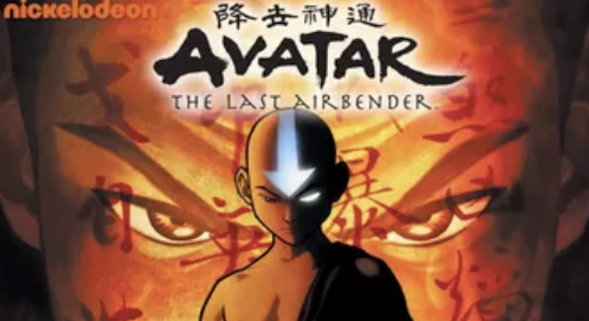
Avatar: The Last Airbender
Avatar: The Last Airbender: If there was ever a TV show I could use to describe why I prefer TV shows over various forms of entertainment, Avatar: The Last Airbender would be at the top of my list. Avatar follows a group of young adults in a world where people are divided according to the four elements (earth, water, fire, air). Avatar is one of the shows that can boast a comprehensive world brimming with well thought out history that enhances the story that’s mostly moved by character-driven plots, a redemption arc that doesn’t erase the wrongdoings of the said character but allows us to appreciate how good is inside of all of us, and (despite my dislike of the handling) sticking to the principles of how life is valued at all times. Not to mention we have nuanced characters like the blind bandit unaccepted by her rich family as a warrior, the young princess driven to madness by her inability to accept her mother’s love, and the old uncle whose main goal was to lead the crown prince to realise the pain and suffering they brought about the world. MAN, what a series!

The Newsroom
The Newsroom: The Newsroom, in my opinion, has one of the strongest premieres in TV history: A news reporter who has chosen to poke fun at politics without ever making a stand, in a “deranged” moment of sincerity Will McAvoy delivers one of the most memorable speeches on tv (google it if you must) that ends with the bold statement: “First step in solving any problem is recognizing there is one. America is not the greatest country in the world anymore.” This unusual monologue is what sets one of my favourite TV shows in motion, with Will’s ex-girlfriend becoming the new executive producer of his news show that begins to aim to be more critical of news than just simply delivering it.

Will and Grace
Will and Grace: Growing up watching Will and Grace, a show about a gay lawyer, his girl best friend, a rich snarky assistant (who works just for the sake of working) and a flamboyant gay man in New York City is probably one of the funniest comedy shows in the history of TV. I find Will and Grace’s constant search of love, and Jack and Karen’s crazy antics hilariously absurd. This show showcases one of the most earnest and touching (questionable) platonic friendships that gave gay people like me hope. I honestly saw myself as Jack, completely hilarious and ridiculous, yet still continuously growing as a character that audiences resounded with and understood. Truly groundbreaking in its time, to the point that even multiple years after, when a remake was commissioned (after the four characters came together for an elections video in 2015) Will and Grace not only came back swinging, but also with storylines that came to address the modern times we’re living now.
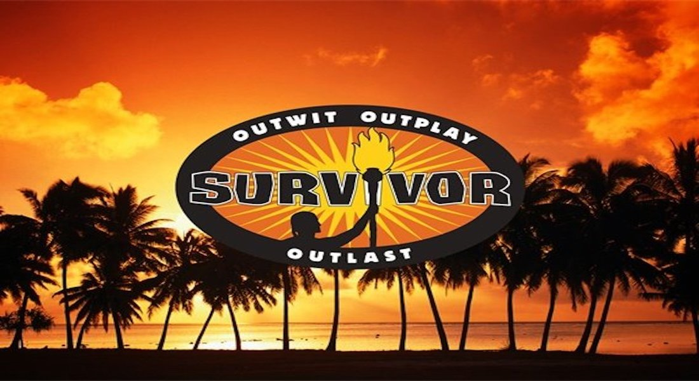
Survivor
Survivor: Could I really make a top shows list without one of the best tv shows of all time? The reality competition Survivor is one I grew up with, stopped watching for a while, only to fall into obsession again years later. The evolution of the Outwit, Outplay, Outlast game play from the very first season to today has become one of the most interesting things to happen in TV history. The game consistently changes as the players (most of whom, in recent memory are fans of the show) have to balance between the “traditional” Survivor gameplay and the “new” Survivor rules + twists. It has provided some of the craziest reality tv personalities, the most expansive tv communities of all time (perfect game! people who’ve won the game twice! countless podcasts!), and probably the most hardcore fans. Always set on different beautiful islands around the world, Survivor has truly stood the test of time and I can imagine years and years of the Survivor World thriving and evolving.
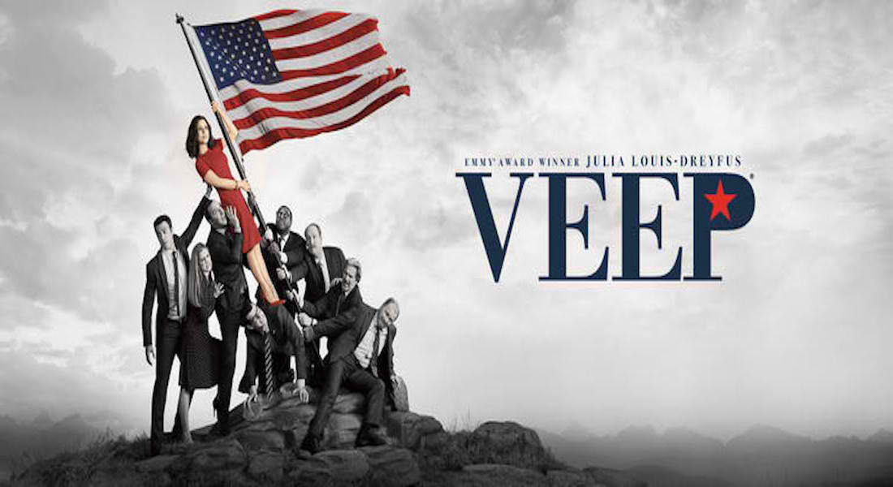
Veep
Veep: If there was any show that portrayed how entirely ridiculous it is to be working in the government and how entertaining it is to watch selfish self-serving people fail horrendously at their get-popular for the next election schemes. This satirical show about bumbling idiots, selfish intelligent people, and their horrible luck is one of the smartest shows on TV right now. Led by the captivating Julia Louis-Dreyfus, it also manages to be neutral which makes it a treat no matter your political stance. Each and every character is written to evoke an emotional response from its audiences whether its a desire to see them succeed (and be okay with it when they ultimately fail), or just laugh at how absolutely crazy these people are. Veep is one of those shows that I wouldn’t mind watching til I grow old.
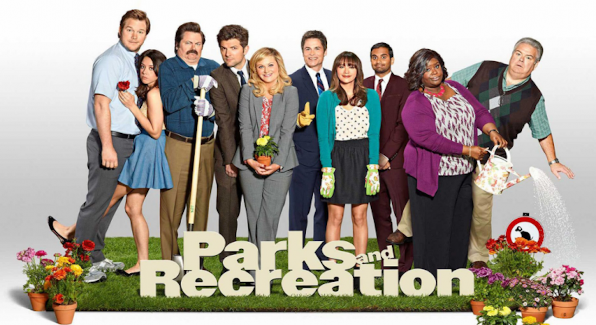
Parks and Recreation
Parks and Recreation: I would consider Parks and Recreation a part of the top 3 shows of its kind including 30 Rock and The Office. What sets apart Parks and Recreation for me is that the main character, Leslie Jones truly embodies what it looks like to mean well and want to do good, despite being surrounded by people who might not always agree with her. Iconic characters like Ron Swanson, Andy Dwyer (also FBI Special Agent: Burt Macklin), Ben Wyatt, April Ludgate, etc. are portrayed by some of the FUNNIEST people ever. The Cast, the storylines, and the obscurity of the Parks and Recreation department all contribute to what makes this show a gem in its own right.
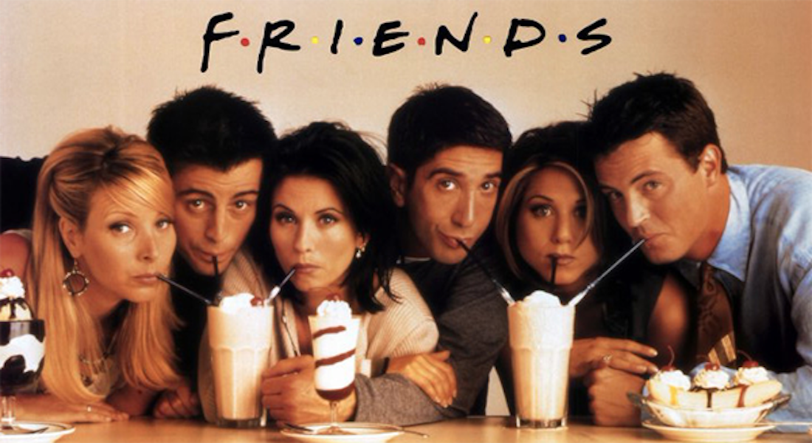
Friends
Friends: Would any list of shows be complete without the iconic FRIENDS?

Crazy Ex Girlfriendd
Crazy Ex-Girlfriend: To include singing as a part of the characters’ lives while consistently poking fun at it or using it as a metaphor for one’s deteriorating mental health is a feat on its own, but to be able to present new original songs that depict each character’s problems is what make Crazy Ex-girlfriend an enigma on TV. Don’t be deterred by its title, Crazy Ex-girlfriend is nuanced and knows exactly what to do with its story. Following, Rebecca, an unhappy lawyer who encounters someone she had a brief fling with in summer camp and is led to move to West Covina to search for happiness (and ruin a relatively unhappy relationship), Crazy Ex-girlfriend delivers a comedy that is 100% self-aware and tackles one of the biggest brushed under issues of our time: mental health.
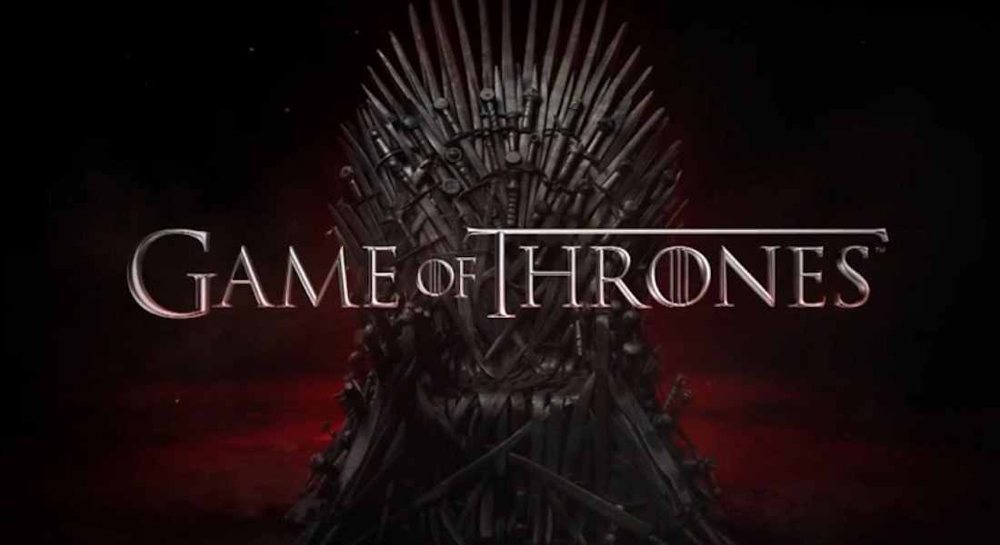
Game of Thrones
Game Of Thrones: Arguably one of the most successful book turned shows form of media EVER, Game Of Thrones is lucky to have had such a rich history and expansive world thanks to the books of George R. R. Martin. Game Of Thrones provided us with some of the best seasons of TV ever, with episodes that still leave a mark on its audiences years and years after. It’s also one of the series that combines multiple storylines and families (almost) without ever making it feel like some were there just for the sake of being there. With some of the best cinematography, direction, dialogue, acting, CGI, and story, Game Of Thrones is and will continue to be written in most best TV lists for the rest of time.

Grey's Anatomy
Grey’s Anatomy: Could there ever be a list of TV’s greatest dramas without the phenomenal Doctors of Seattle Grey (as it was formerly known)? Introducing the iconic characters like Patrick Dempsey’s McDreamy, Ellen Pompeo’s Meredith, Chandra Wilson’s Bailey, Sandra Oh’s Cristina, and the list goes on and on and on. This is what put Shonda Rhimes on the map, and the beginning of what is now known as Shondaland. With two spin-offs to its name, the powerful writing and tears induced by watching Grey’s Anatomy is incomparable.

Chuck
Chuck: The first of two Josh Schwartz series on this list, Chuck is undoubtedly one of the most memorable TV shows in my opinion. A story about a college dropout, Chuck receives an email from a former classmate (who’s secretly a part of the CIA) and downloads all of the CIA information via the intersect (which his classmate stole) onto his brain. What follows is an adventure like no other, falling in love with Yvonne Strahovski, who is the CIA agent assigned to take back the information, and running away from NSA agents and solving cases along the way. It seems like a pretty basic concept, but let me tell you my investment in this show was different. Following Chuck and Sarah’s relationship, hoping Chuck would finally get a break, and generally seeing how kind Chuck was despite the cards he was dealt with was a refreshing change from what we now dub as toxic masculinity. And who could forget the fans uproar dubbed Save Chuck that pushed NBC to be renewed for a third season? Iconic.
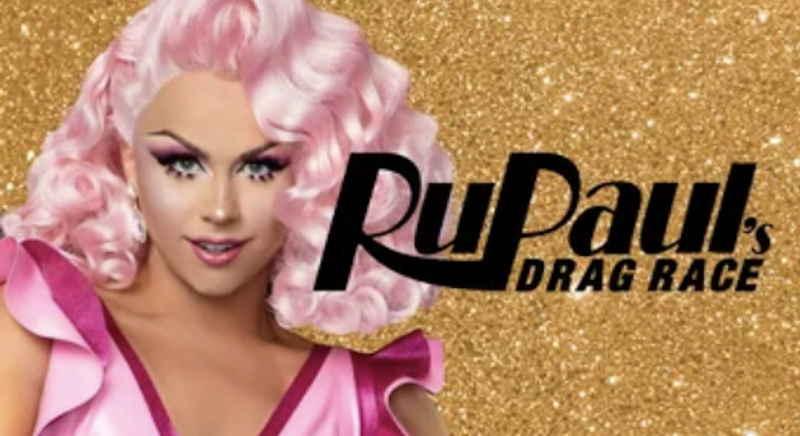
Rupaul's Drag Race
Rupaul’s Drag Race: I don’t think it’s fair that I would include something I’ve only watched for a short period of time (despite it being on air for so long) in my list of favourite TV shows, BUT Rupaul’s Drag Race has consumed my life the past few months and if there’s one thing I can say about it, I have truly made a mistake in my judgment of the show. After being an avid fan of ANTM and Project Runway, I didn’t think I could find a reality tv competition that I would enjoy more than those two and then as Alexis Mateo would say, BAM! I watched Drag Race. An amalgamation of multiple reality competitions that have contestants sewing, impersonating, acting, singing, dancing, while serving looks and being fierce queens is the competition we all deserve to have on TV. The iconic wig snatches, the drag race fans and community (despite how hateful and divisive this community may be), the snatch games, the teas, the shades, the comedy, the fashion, the talent, the performances, the drag queens who stand up for the LGBTQ+ community! There is much to be said about why this TV show is and will remain iconic to me, but more than the competition and the entertainment I get from it, the ability to connect with queens, watch them, see their careers blossom beyond the show is something that I feel adds value to the TV show outside a normal series. Also, the bonus is Rupaul’s Drag Race has a spin-off, its All Stars Season which is also a BLAST. Okurrrr!
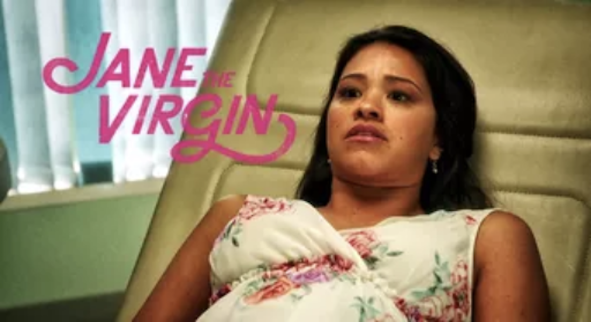
Jane The Virgin
Jane The Virgin: Jane The Virgin is one of those comedy shows that stays true to its origins: a telenovela. It’s a rare show that masterfully intertwines what people love the most about telenovelas and western comedy. Many men and women have fallen in love with the main characters of this tv show due to its nuance: growing its villains, adding layers to the initial love triangle trope, enhancing the family dynamic and exploring immigration themes while managing to continuously make people laugh and cry multiple times each episode. If there is ever one thing I would show to my friends to convince them to watch this show, it’s the scene where Jane (the titular virgin) finds out she is pregnant (they don’t know why) and her mother, Xiomara starts kneeling and praying to Jane thinking she has had an immaculate conception (spoiler: a dazed and confused doctor accidentally injects her with the sperm Rafael, a hotel tycoon who froze his sperm due to cancer, ayayay!)
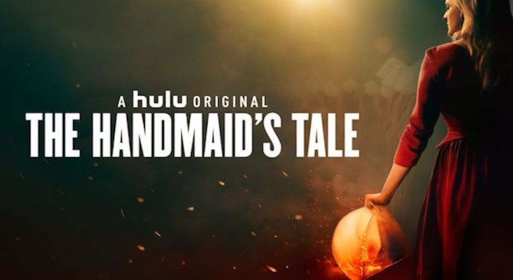
Skins
The Handmaid’s Tale: Coming in at a time when the President of one of the world’s superpowers openly insults women, it’s hard to imagine that The Handmaid’s Tale is based on a book released over 3 decades ago. Set in the US after a totalitarian theocratic government takes over, it follows the story of Offred, a woman valued for her ability to still be able to carry a child in her womb, as she is assigned to a family to be the designated bearer of the child of a commander (a concubine in essence) with her primary role is to be fucked in a disturbing ritual including the commander’s wife. Truly horrifying and heavy to watch, The Handmaid’s Tale is a constant reminder of what happens when we let old outdated ideologies to reign in times of tragedy.
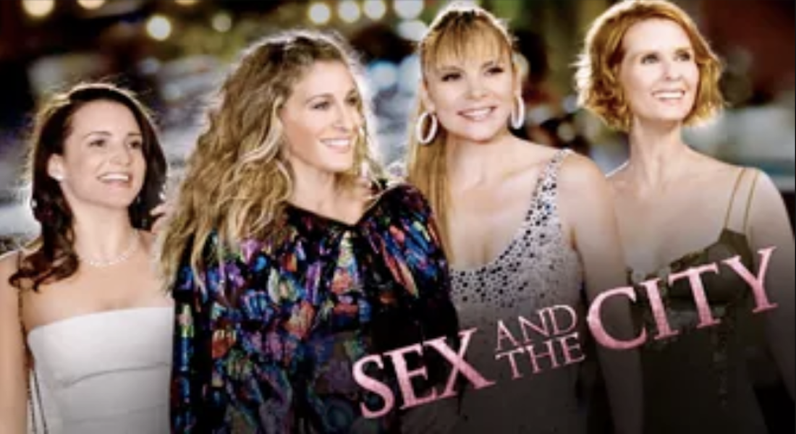
Sex And The City
Sex And The City: Who would’ve thought (at least in that time) that a show about middle aged women living in New York City would become one of the biggest tv shows (and even movie series) in all of history? With two movies, 6 seasons on television, Sex and The City made waves across women all over the world, encouraging them to be who they wanted to be, to value their friendships with other women, to become more open about their sexuality, and to imagine themselves in a world where its both possible to be successful, to find love, and to be open about sex no matter what age you are. To have Carrie Bradshaw narrate the episodes as well gave a lot of introspection, it didn’t patronise its characters, more make us realise how despite their flaws, they had the ability to overcome whatever it was the patriarchal society they were normally exposed to. Some viewers may be turned off by what they perceive is crassness, but to that I say, if you can relate, it isn’t crass, it’s real life.

The O.C.
The O.C.: One of the most iconic lines to be ever said in TV History, “Welcome to the O.C., bitch!” Moving beyond teenage issues of fitting in, acting out, relationships with family, and delving into deeper situations like alcohol and substance abuse, obsessive behaviour, classism, The O.C. is easily one of the best teen shows out there. Following Ryan, a juvenile delinquent, who is adopted by the Cohen family, navigating through his high school years with young love, Marissa, the girl who lives next door to the Cohens, an adoptive brother Seth Cohen, and Marissa’s best friend Summer, this show is ultimately more than just a story of what it means to be a teenager but a story of friendships, family, and love.
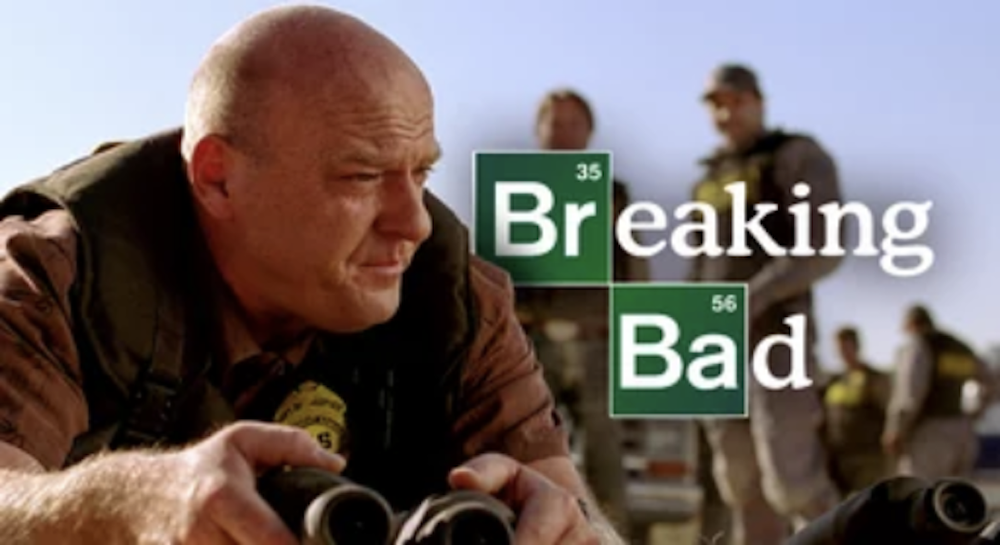
Breaking Bad
Breaking Bad
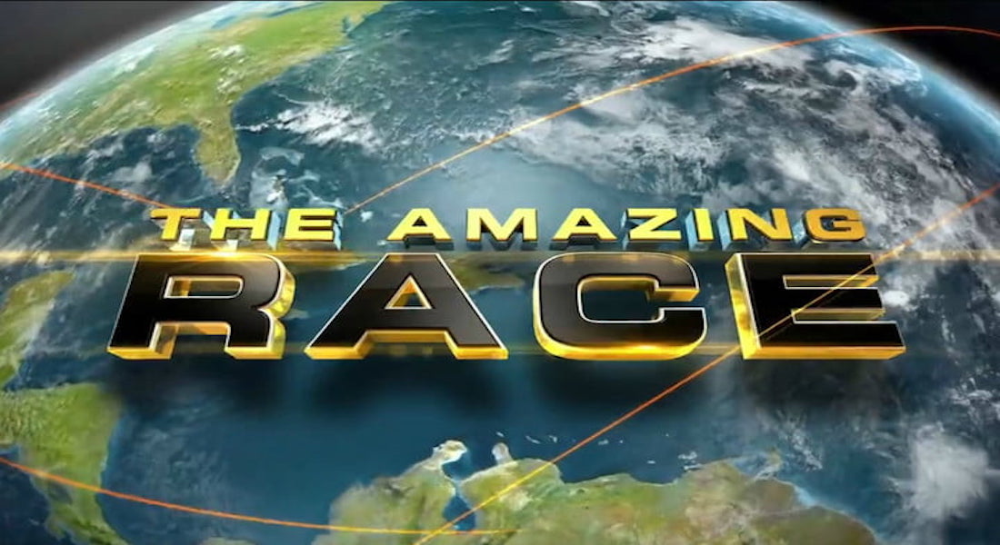
The Amazing Race
The Amazing Race: Different from Survivor, The Amazing Race may not have grown increasingly different from its first season, but it is completely entertaining. Amazing Race satisfies the desire to see the world, with challenges like jumping off cliffs or learning about different country’s cultures, and the drama of being in a competition, lots of arguing and shouting. Years and years of watching The Amazing Race and it still never fails to keep me entertained.
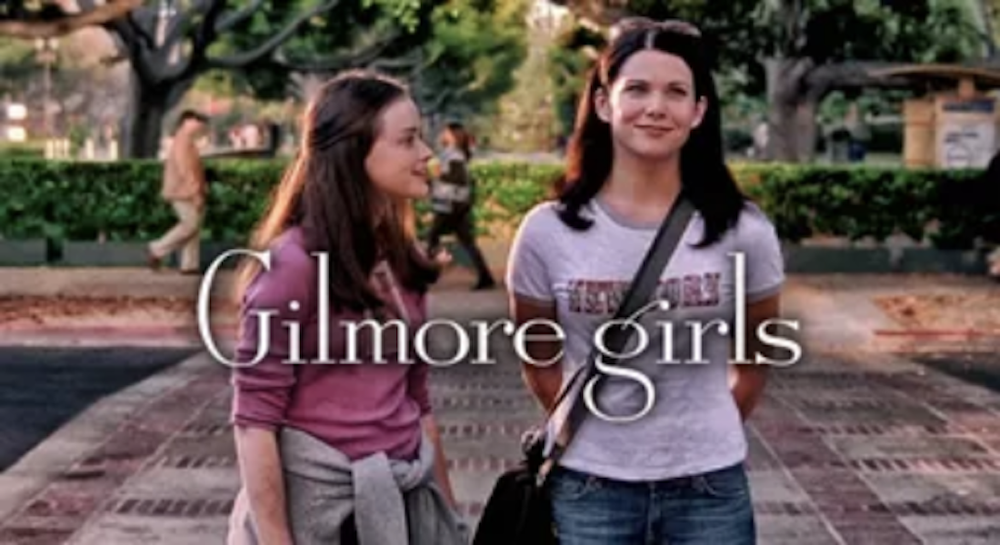
Gilmore Girls
Gilmore Girls: Gilmore Girls, before my very disliked seasons, was a show full of sharp wit, fun comedy, and very endearing moments. The titular Gilmore Girls, Lorelai and Rory, a mother-daughter duo whose relationship people who love the show envied, were probably two of the most well-liked characters in TV history (maybe to a fault even, for Rory). I can’t confirm this but Gilmore girls episodes probably have the longest scripts on TV simply because of how fast the characters talk, but it isn’t just chatter, it’s always well thought out sarcasm and humor that makes this a cult classic. Amy Sherman-Palladino deserved an emmy for this show, and it’s nice to know that the actors and actresses from this show have gone on to have stellar careers afterwards. And who could forget the almost mythical final four words that Amy held onto as a secret for almost 10 years post ending of the show (half thank you netflix for giving us the chance to hear them, albeit a completely different circumstance that ultimately changed the impact of those final four words)
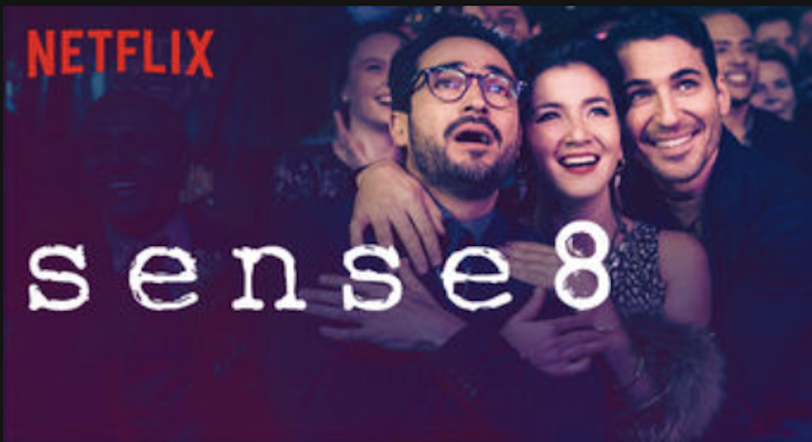
Sense8
Sense8: Sense8 is the tv show that replaced any potential item on this list that has anything to do with superhumans. Beating Heroes, Misfits, or any other Marvel show that could have appeared on this list, Sense8 is a more nuanced creation of the Wachowski Sisters about senates, a group of people in a cluster of 8 with a shared consciousness that allows them to take each other’s places (aka use each other’s abilities in their time of need), or visit each other (aka provide them with each other’s company when need be). Consisting of a diverse cast who live and struggle with different issues all over the world, Sense8 has strong themes of empathy, connection, and often feels like a symbolisation of social media and how connected we become despite being far away from each other. The power of this show is beyond words, to the point that when Netflix decided to discontinue it, a global uproar was heard and Netflix had to sign on a 2 hour finale special to end the series.

Westworld
Westworld: Westworld is everything I hate and love about what we call prestige TV. Back in 2013, Logan hill created a checklist for what constitutes of prestige TV: like a novel, cinematography like a movie, it’s depressing, there’s barely any fun, you never know what’s going on, etc. A park where humans get to engage in a Western fantasy of their own, whether as heroes or villains to the robots who resemble humans almost to a tee, is the general backdrop of this series. Exploring humanity, consciousness, how people are supposed to act towards robots, and how human beings act when they’re given freedom without consequences (supposedly) is the main premise of this show. To me, Westworld is the perfect example of prestige TV and everything there is to love and hate about it. It’s confusing, it’s complex, it’s hard to be invested in most of the lead characters due to the ever changing personalities, we know we’re guessing something and it’s a lot of speculation, beautiful drawn-out sometimes preachy monologues; Westworld is prestige TV at its best. What sets Westworld apart and makes me put it on the list is it constantly makes you question which side you’re on. It poses questions about technology, consciousness, morality, right and wrong, that if we look at where we’re heading modernisation wise, we will have to answer very very soon. Major bonus, the cast is phenomenal and Anthony Hopkins is terrifyingly majestic as Robert Ford, Director and Co-Founder of Westworld.
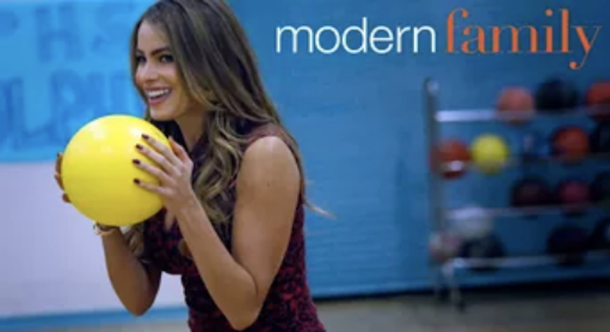
Modern Family
Modern Family: Currently looking at the TV landscape now, it’s hard to imagine that Modern Family was once one of a kind. A family sit-com that depicts not one, not two, but three different families with relatively unique situations ranging from a homosexual couple, to the patriarch dating someone almost his daughter’s age? What a treat this was to viewers, with over 9 seasons to its belt, Modern Family has showcased the pains and beauty of what it is to defy the “norms” in what is considered a traditional family.

Dear White People
Dear White People: Dear White People is probably one of the shows snubbed by awards but deserves a couple of awards in some categories. With notable directors like Barry Jenkins, and a socio-political commentary on racism, this show is a show that NEEDS to be seen. One of the most important discussions that needs to be seen on the small screen done exquisitely well, Dear White People dives into the deep intricacies of the struggles black people have to face in this day and age.
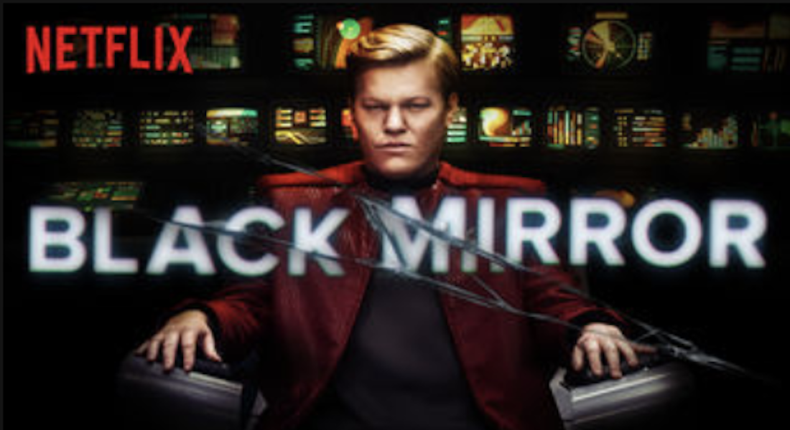
Westworld
Black Mirror: Black Mirror is one of the shows that I discovered during the long Game Of Thrones Hiatus and has since then moved from BBC to Netflix. The thing I love the most about this anthology series is that it never fails to pique my interest. Whether it’s the episode about the prime minister needing to fuck a pig on live television, or the alternate future where people have devices that record their entire lives, or my absolute favourite, having the ability to download one’s entire social media information into a robot to provide a semi-realistic clone, Black Mirror continuously shells out thought provoking episodes about what would happen if we take technology too far.